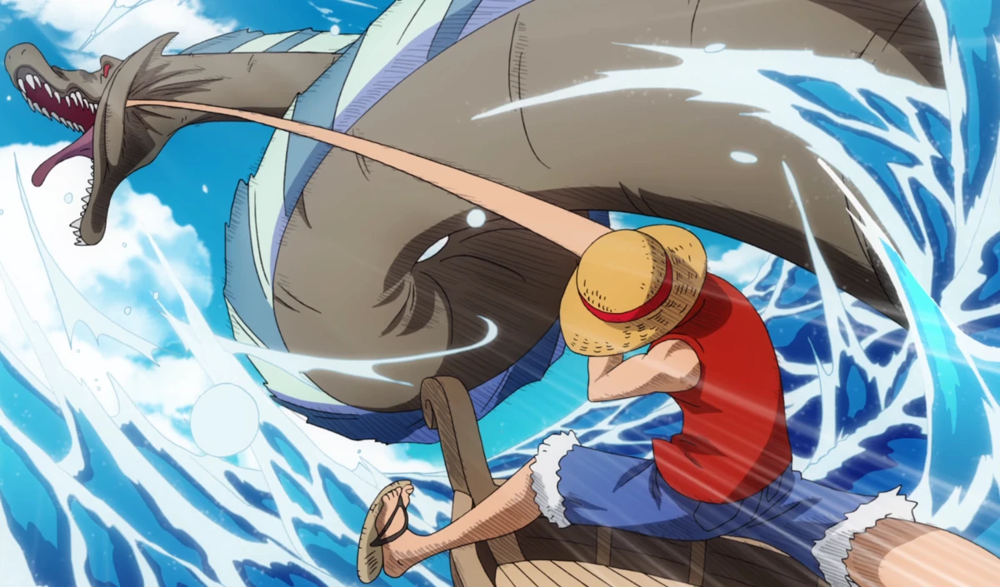
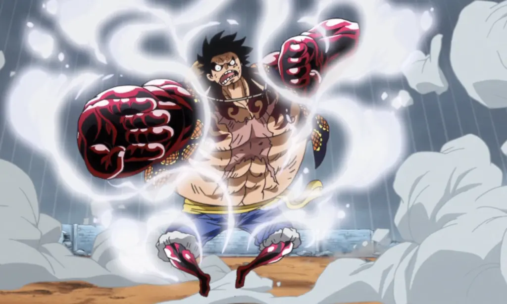

| Nome |
Descrição |
Imagem |
1 ou forma base |
É a forma padrão do Luffy, onde ele consegue se esticar e tem mais resistencia a socos |
 |
Gear 2 |
Nessa forma luffy aumenta a circulação der sangue em seu corpo tencionando o seu coração, ela aumenta sua velocidade,agilidade e força, sendo muito utilizada desde sua criação em enies lobby, mas antes do time skip ela força muito seu corpo, retirando seu tempo de vida. |
 |
Gear 3 |
Nessa forma luffy sopra ar para dentro de seus ossos deixando seus menbros maiores, mais fortes e mais resistentes, foi utilizada pela primeira vez em enies lobby e de forma recorente até a criação e dominio do Gear 4, antes do time skip ela tinha como consequencia trasformar o luffy em uma criança por um curto periodo de tempo alem de ser muito cansativa. |
 |
Gear 4 |
Nessa forma luffy sopra ar para dentro de seus musculos e os encobre de haki, deixando os mais fortes e resistentes alem de aumentar sua velocidade, ela também permite que o Luffy contraia seus membros para proferir ataques mais fortes jundo e que ele mude a direção de seus socos no meio dos golpes.Ela pode ser combinada com o gear 3, ela consome muito de seu haki de forma que ele so consegue mante-la por certa de 30 minutos e apos seu termino ele fica impedido de usar haki por 10 minutos. |
 |
Gear 5 |
Essa forma consiste no despertar dos poderes de sua akuma no mi, onde luffy ganha total liberdade e controle com seu corpo o permitindo distorce-lo e muda-lo como desejar, seus limtes são apenas sua criatividade e o alto consumo de ernergia pois luffy precisa manter seu coração batendo no ritimo dos tambores da libertação, atual ele não consegue manter essa forma por muito tempo onde ela retira todas as suas energias e ainda reduz seu tempo de vida. |
 |